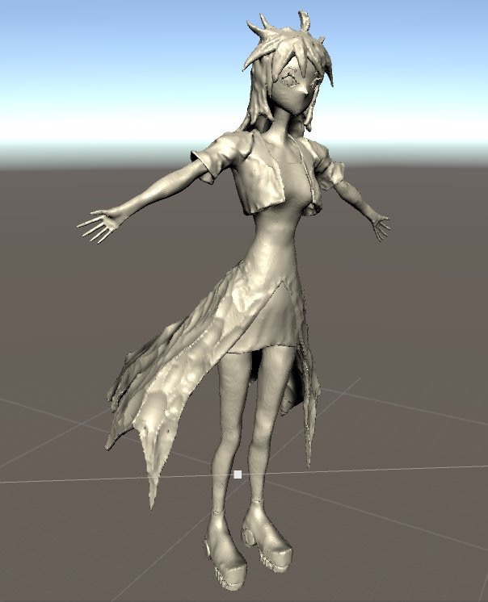
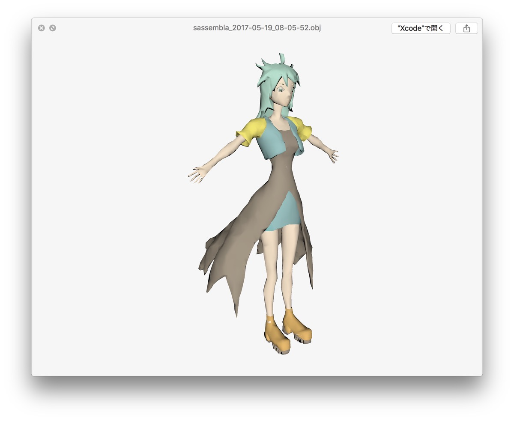
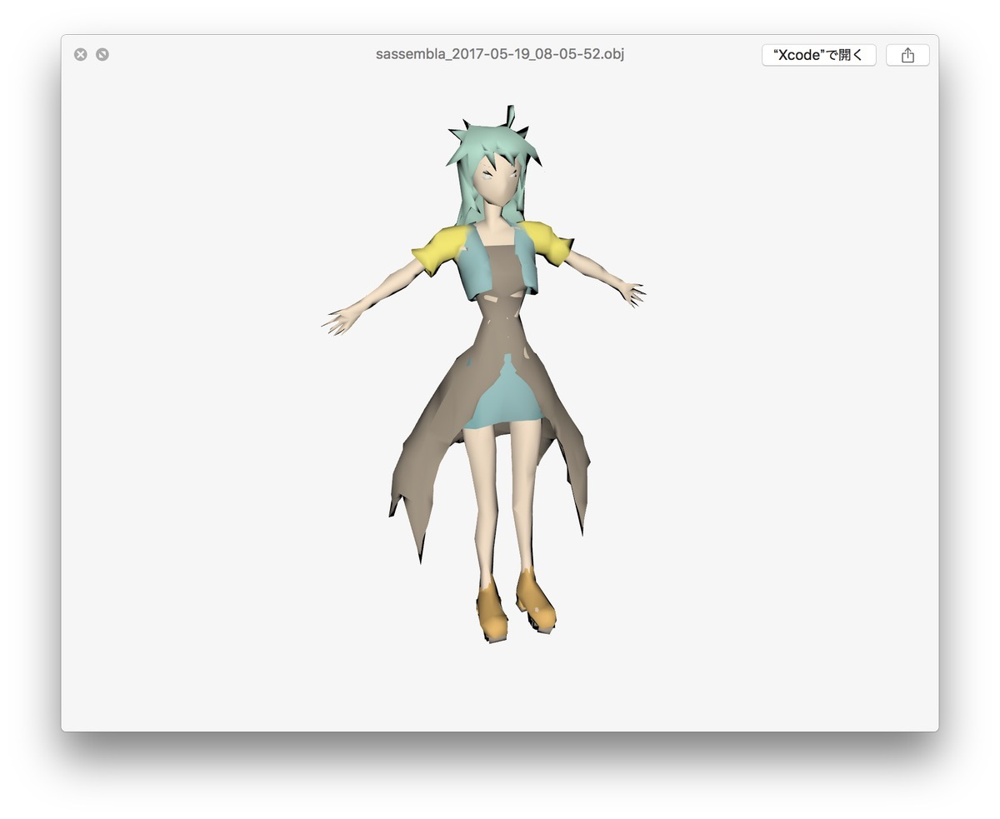

Mediumでのモデリングexportを試す会とあとチートシート
概要
これ使うと楽、がいっぱいあったのでまとめる。
Traditionalスタンプ
ヘラとかの形をしたスタンプで、主に粘土を削るのに使う。
幅が広い(めっちゃ速く振って粘土削ってもバリが出にくい)のがすごくいい。
画像貼り
画像を画面内に貼ることができる。
さらにそこから、
・画像の移動をモデルと紐づける
・サイズ、向きは自在に調整
・一時非表示/表示/削除
とかができるので、さすがって感じ。
カラーチャートとかももちろん貼れる。スポイトでカラー採れたりする？
-> 画像として貼れるんだけど、スポイトはできない。残念。
で、これ、カラーを持った素材を放り込むことはできるんだろうか。
カラーを持った素材を生成する、みたいなことはできそうな気がするんだけど。
なんらかリクエスト出してみよう。-> 出した。
レイヤーもっといっぱい欲しい。無限に欲しい。
これはまあそういう感じで。フォーラムによるといい感じになるという予定はあるらしい。
レイヤーのオーダリングが欲しい
順番入れ替えたい。まあそういう感じで。
パーツ単位を維持したexport
objでもfbxでも、Mediumのレイヤー単位でのパーツを保持している。
Unity上とかだとこんな風に表示される。
レイヤー順に関しては、アルファベット順になってるっぽい。まあ順に依存することはあんまないと思うけど。
モデリングの時でも、階層構造は欲しいな～～。
ZBrushとかに持ち込んだ時にどうなるか
-> ポリゴン軽減の話をどっかにまとめて書こう。
・ZBrushで減らすには
ZBrushでfbx, objの形式でレイヤー構造は生きるのだろうか(死んでるとこしかみたことない)
・Sympolygonとかどうなの
ポリゴン数記録
モデリングにもちょいちょい手が加わって行ってるのでまあ記録までに。
・ポリゴン数
・サイズ
・感じ
あたりをメモろうと思う。今後は。
130万ポリゴン ->

fbxで24Mくらいあって、なるほど重たい。ディテールはほぼ完璧に出てると思う。まあザラザラしてるな～みたいなところも含めて。
このあたりをどう出力できるか、というのが知りたいところ
12,000ポリゴン -> 
objで頂点カラー。わりと形状出せてるような。オートの割にはまともっぽい。
5,000ポリゴン 
わーなんとなく雑にリダクションされてる感じが好き。指が残ってるのが奇跡っぽさある。
export時のモデル位置の基準
フォーラムに資料が上がっている。
Export pipeline guide
https://forums.oculus.com/community/discussion/52947/medium-export-pipeline-guide
で。これ曰く、
地面の十字が交わるポイントがexport後のモデルの原点になるよ
とのこと。なるほど！